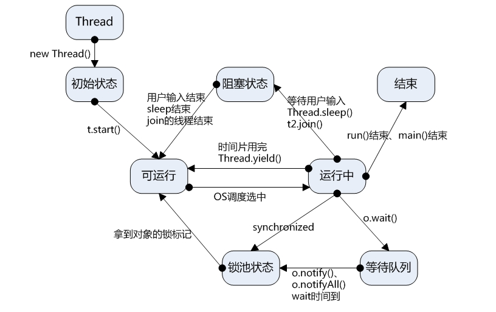

线程和进程 进程：每一个进程都有独立的代码和数据空间（进程上下文）。进程间的切换会有较大的开销，一个进程包括1—n个线程。（进程是资源分配的最小单位）
线程：同一类线程共享代码和数据空间，每一个线程有独立的执行栈和程序计数器(PC)，线程切换开销小。（线程是cpu调度的最小单位）
线程是进程的子集，一个进程可以有很多线程，每条线程并行执行不同的任务。不同的进程使用不同的内存空间，而所有的线程共享一片相同的内存空间。每个线程都拥有单独的栈内存用来存储本地数据。
线程的创建 继承Thread类 1 2 3 4 5 6 7 8 9 10 11 12 13 14 15 16 17 18 19 20 public class TestThread extends Thread public TestThread (String name) super (name); } @Override public void run () for (int i=0 ;i<1000 ;i++){ System.out.println(this .getName()+"===>" +i); } } public static void main (String[] args) TestThread thread1=new TestThread("线程1" ); TestThread thread2=new TestThread("线程2" ); thread1.start(); thread2.start(); } }
注意：start()方法的调用后并非马上执行多线程代码。而是使得该线程变为可执行态（Runnable），什么时候执行是由操作系统决定的。
在线程没有结束run()方法之前，不要让线程再调用start()方法，否则将发生IllegalThreadStateException异常。
实现Runnable接口 1 2 3 4 5 6 7 8 9 10 11 12 13 14 public class TestThread implements Runnable @Override public void run () for (int i=0 ;i<1000 ;i++){ System.out.println(Thread.currentThread().getName()+"===>" +i); } } public static void main (String[] args) TestThread thread=new TestThread(); new Thread(thread,"Thread1" ).start(); new Thread(thread,"Thread2" ).start(); } }
Thread类实际上也是实现了Runnable接口的类。
在启动的多线程的时候。须要先通过Thread类的构造方法Thread(Runnable target) 构造出对象。然后调用Thread对象的start()方法来执行多线程代码。
实际上全部的多线程代码都是通过执行Thread的start()方法来执行的。因此，不管是扩展Thread类还是实现Runnable接口来实现多线程，终于还是通过Thread的对象的API来控制线程的。
实现Callable接口 1 2 3 4 5 6 7 8 9 10 11 12 13 14 15 16 17 18 19 20 21 22 23 24 25 26 27 28 29 30 import java.util.concurrent.*;public class TestThread implements Callable <Boolean > @Override public Boolean call () for (int i=0 ;i<1000 ;i++){ System.out.println(Thread.currentThread().getName()+"===>" +i); } return true ; } public static void main (String[] args) throws ExecutionException, InterruptedException TestThread thread1=new TestThread(); TestThread thread2=new TestThread(); ExecutorService service = Executors.newFixedThreadPool(2 ); Future<Boolean> r1 = service.submit(thread1); Future<Boolean> r2 = service.submit(thread2); Boolean rs1 = r1.get(); Boolean rs2 = r2.get(); service.shutdown(); } }
Thread和Runnable的差别 假设一个类继承Thread。则不适合资源共享。可是假设实现了Runable接口的话，则非常easy的实现资源共享。
Runnable优势：
适合多个同样的程序代码的线程去处理同一个资源
能够避免java中的单继承的限制
添加程序的健壮性，代码能够被多个线程共享，代码和数据独立
线程池仅仅能放入实现Runable或callable类线程，不能直接放入继承Thread的类
线程状态转换 
新建状态（New）：新创建了一个线程对象。
就绪状态（Runnable）：线程对象创建后，其它线程调用了该对象的start()方法。该状态的线程位于可执行线程池中，变得可执行，等待获取CPU的使用权。
执行状态（Running）：就绪状态的线程获取了CPU，执行程序代码。
堵塞状态（Blocked）：堵塞状态是线程由于某种原因放弃CPU使用权。临时停止执行。直到线程进入就绪状态，才有机会转到执行状态。堵塞的情况分三种：
等待堵塞：执行的线程执行wait()方法，JVM会把该线程放入等待池中。 同步堵塞：执行的线程在获取对象的同步锁时。若该同步锁被别的线程占用。则JVM会把该线程放入锁池中。 其它堵塞：执行的线程执行sleep()或join()方法。或者发出了I/O请求时。JVM会把该线程置为堵塞状态。当sleep()状态超时、join()等待线程终止或者超时、或者I/O处理完毕时。线程又一次转入就绪状态。（注意,sleep是不会释放持有的锁）
死亡状态（Dead）：线程执行完了或者因异常退出了run()方法，该线程结束生命周期。
1 2 3 4 5 6 7 8 9 10 11 12 13 14 15 16 17 18 19 20 21 22 23 24 25 26 27 28 29 30 public class TestState public static void main (String[] args) throws InterruptedException Thread thread=new Thread(()->{ for (int i=0 ;i<5 ;i++){ try { Thread.sleep(1000 ); } catch (InterruptedException e) { e.printStackTrace(); } } System.out.println("========" ); }); Thread.State state=thread.getState(); System.out.println(state); thread.start(); state=thread.getState(); System.out.println(state); while (state!=Thread.State.TERMINATED){ Thread.sleep(100 ); state=thread.getState(); System.out.println(state); } } }
线程优先级 Java提供一个线程调度器 来监控程序中启动后进入就绪状态的所有线程，线程调度器按照优先级决定应该调度哪个线程来执行。
线程的优先级用数字表示，范围1-10。如果参数不在1-10范围内，那么setPriority便产生一个IllegalArgumentException异常。
Thread.MIN_PRIORITY=1
Thread.NORM_PRIORITY=5
Thread.MAX_PRIORITY=10
线程优先级的特性：
线程优先级的继承特性 :也就是如果线程A启动线程B,那么线程A和B的优先级是一样的线程优先级的规则性 :即线程会优先级的大小顺序执行,但是不一定是优先级较大的先执行完线程优先级的随机特性
守护线程 线程分为用户线程 和守护线程
虚拟机必须确保用户线程执行完毕
虚拟机不用等待守护线程执行完毕
守护线程：后台记录操作日志、监控内存、垃圾回收等待
1 2 3 4 5 6 7 8 9 10 11 12 13 14 15 16 17 18 19 20 21 22 23 24 25 26 27 28 29 30 31 32 33 34 35 36 37 38 public class TestDaemon public static void main (String[] args) God god = new God(); You you = new You(); Thread thread=new Thread(god); thread.setDaemon(true ); thread.start(); new Thread(you).start(); } } class God implements Runnable @Override public void run () while (true ){ System.out.println("上帝守护着你" ); } } } class You implements Runnable @Override public void run () for (int i=0 ;i<36500 ;i++){ System.out.println("你每天都活的很开心" ); } System.out.println("=====goodbye world!=====" ); } }
线程停止 1 2 3 4 5 6 7 8 9 10 11 12 13 14 15 16 17 18 19 20 21 22 23 24 25 26 27 28 29 30 31 32 33 34 public class TestStop implements Runnable private boolean flag=true ; @Override public void run () int i=0 ; while (flag){ System.out.println("run...Thread" +i++); } } public void stop () this .flag=false ; } public static void main (String[] args) TestStop testStop=new TestStop(); new Thread(testStop).start(); for (int i=0 ;i<1000 ;i++){ System.out.println("main" +i); if (i==800 ){ testStop.stop(); System.out.println("线程停止！" ); } } } }
线程休眠 sleep()使当前线程进入停滞状态（堵塞当前线程），让出CUP的使用、目的是不让当前线程独自霸占该进程所获的CPU资源。以留一定时间给其它线程执行的机会。sleep()是Thread类的Static(静态)的方法；因此他不能改变对象的机锁。
1 2 3 4 5 6 7 8 9 10 11 12 13 14 15 16 17 18 19 20 public class TestSleep public static void main (String[] args) try { tenDown(); } catch (InterruptedException e) { e.printStackTrace(); } } public static void tenDown () throws InterruptedException int num=10 ; while (true ){ Thread.sleep(1000 ); System.out.println(num--); if (num<=0 ){ break ; } } } }
sleep(时间)指定当前线程阻塞的毫秒数
sleep存在异常InterruptedException
sleep时间达到后，线程进入就绪状态
sleep可以模仿网络延时，倒计时等
每一个对象都有一个锁，sleep不会释放锁（wait会释放锁）
线程礼让 线程礼让：让CPU重新调度，礼让不一定会成功！ yield()做的是让当前执行线程回到可执行状态，以同意具有同样优先级的其它线程获得执行机会。因此。使用yield()的目的是让同样优先级的线程之间能适当的轮转执行。可是。实际中无法保证yield()达到让步目的。由于让步的线程还有可能被线程调度程序再次选中。
1 2 3 4 5 6 7 8 9 10 11 12 13 14 15 16 17 18 19 20 21 22 23 24 25 26 27 28 29 30 31 public class TestYield public static void main (String[] args) MyYield myYield=new MyYield(); new Thread(myYield,"A" ).start(); new Thread(myYield,"B" ).start(); } } class MyYield implements Runnable @Override public void run () System.out.println(Thread.currentThread().getName()+"线程开始执行" ); Thread.yield(); System.out.println(Thread.currentThread().getName()+"线程停止执行" ); } }
线程联合 Join合并线程，待此线程执行完成后，再执行其他线程，其他线程阻塞。（类似插队）
在非常多情况下，主线程生成并起动了子线程，假设子线程里要进行大量的耗时的运算。主线程往往将于子线程之前结束，可是假设主线程处理完其它的事务后。须要用到子线程的处理结果，也就是主线程须要等待子线程执行完毕之后再结束，这个时候就要用到join()方法了。
1 2 3 4 5 6 7 8 9 10 11 12 13 14 15 16 17 18 19 20 21 22 public class TestJoin implements Runnable @Override public void run () for (int i=0 ;i<100 ;i++){ System.out.println("VIP线程" +i); } } public static void main (String[] args) throws InterruptedException TestJoin testJoin=new TestJoin(); Thread thread=new Thread(testJoin); thread.start(); for (int i=0 ;i<1000 ;i++){ if (i==200 ){ thread.join(); } System.out.println("main" +i); } } }
线程同步 由于同一个进程的多个线程共享同一块存储空间，在带来方便的同时，也带来了访问冲突问题，为了保证数据在方法中被访问时的正确性，在访问时加入锁机制 synchronized,当一个线程获得对象的排它锁，独占资源，其他线程必须等待其使用后释放锁才可。它包括两种用法：synchronized方法和synchronized块。
存在以下问题：
一个线程持有锁会导致其他所需此锁的线程挂起
在多个线程竞争下，加锁，释放锁会导致比较多的上下文切换和调度延时，引起性能问题。
如果一个优先级高的线程等待一个优先级低的线程会导致优先级倒置，引起性能问题。
同步方法 1 2 3 4 5 6 7 8 9 10 11 12 13 14 15 16 17 18 19 20 21 22 23 24 25 26 27 28 29 30 31 32 33 34 35 36 37 38 39 40 41 42 43 44 45 46 47 48 49 50 public class UnsafeBuyTicket public static void main (String[] args) BuyTicket station=new BuyTicket(); new Thread(station,"你" ).start(); new Thread(station,"我" ).start(); new Thread(station,"他" ).start(); } } class BuyTicket implements Runnable private int ticketNums=10 ; boolean flag=true ; @Override public void run () while (flag){ try { buy(); } catch (InterruptedException e) { e.printStackTrace(); } } } private void buy () throws InterruptedException if (ticketNums<=0 ){ flag=false ; return ; } Thread.sleep(100 ); System.out.println(Thread.currentThread().getName()+"拿到" +ticketNums--); } }
修改后：
1 2 3 4 5 6 7 8 9 10 private synchronized void buy () throws InterruptedException if (ticketNums<=0 ){ flag=false ; return ; } Thread.sleep(100 ); System.out.println(Thread.currentThread().getName()+"拿到" +ticketNums--); }
同步块 1 2 3 4 5 6 7 8 9 10 11 12 13 14 15 16 17 18 19 20 21 22 23 24 25 26 27 28 29 30 31 32 33 34 35 36 37 38 39 40 41 42 43 44 45 46 47 48 49 50 51 52 53 54 55 56 57 58 59 60 61 62 63 64 65 66 67 68 69 public class UnsafeBank public static void main (String[] args) Account account = new Account(100 , "农业银行" ); Drawing person1=new Drawing(account,50 ,"person1" ); Drawing person2=new Drawing(account,100 ,"person2" ); person1.start(); person2.start(); } } class Account int money; String name; public Account (int money, String name) this .money = money; this .name = name; } } class Drawing extends Thread Account account; int drawingMoney; int nowMoney; public Drawing (Account account,int drawingMoney,String name) super (name); this .account=account; this .drawingMoney=drawingMoney; } @Override public void run () if (account.money-drawingMoney<0 ){ System.out.println(Thread.currentThread().getName()+"余额不足" ); return ; } try { Thread.sleep(1000 ); } catch (InterruptedException e) { e.printStackTrace(); } account.money=account.money-drawingMoney; nowMoney=nowMoney+drawingMoney; System.out.println(account.name+"余额为" +account.money); System.out.println(this .getName()+"手里的钱" +nowMoney); } }
修改后：
1 2 3 4 5 6 7 8 9 10 11 12 13 14 15 16 17 18 19 20 21 22 23 24 25 26 27 28 29 @Override public void run () synchronized (account){ if (account.money-drawingMoney<0 ){ System.out.println(Thread.currentThread().getName()+"余额不足" ); return ; } try { Thread.sleep(1000 ); } catch (InterruptedException e) { e.printStackTrace(); } account.money=account.money-drawingMoney; nowMoney=nowMoney+drawingMoney; System.out.println(account.name+"余额为" +account.money); System.out.println(this .getName()+"手里的钱" +nowMoney); } }
总结:
线程同步的目的是为了保护多个线程反问一个资源时对资源的破坏。
线程同步方法是通过锁来实现，每一个对象都有且仅有一个锁。这个锁与一个特定的对象关联，线程一旦获取了对象锁，其它访问该对象的线程就无法再访问该对象的其它非同步方法。
对于静态同步方法，锁是针对这个类的。锁对象是该类的Class对象。静态和非静态方法的锁互不干预。一个线程获得锁，当在一个同步方法中访问另外对象上的同步方法时，会获取这两个对象锁。
对于同步，要时刻清醒在哪个对象上同步。这是关键。
编写线程安全的类。须要时刻注意对多个线程竞争访问资源的逻辑和安全做出正确的推断。对“原子”操作做出分析。并保证原子操作期间别的线程无法访问竞争资源。
当多个线程等待一个对象锁时，没有获取到锁的线程将发生堵塞。
死锁是线程间相互等待锁锁造成的，在实际中发生的概率非常的小。
线程池 线程池的优势
降低系统资源消耗，通过重用已存在的线程，降低线程创建和销毁造成的消耗
提高系统响应速度，当有任务到达时，通过复用已存在的线程，无需等待新线程的创建便能立即执行
方便线程并发数的管控。因为线程若是无限制的创建，可能会导致内存占用过多而产生OOM，并且会造成cpu过度切换（cpu切换线程是有时间成本的（需要保持当前执行线程的现场，并恢复要执行线程的现场））
提供更强大的功能，延时定时线程池
线程池原理
线程池实现 1 2 3 4 5 6 7 8 9 10 11 12 13 14 15 16 17 18 19 20 21 22 23 24 25 26 import java.util.concurrent.ExecutorService;import java.util.concurrent.Executors;public class TestPool public static void main (String[] args) ExecutorService service = Executors.newFixedThreadPool(10 ); service.execute(new MyThread()); service.execute(new MyThread()); service.execute(new MyThread()); service.execute(new MyThread()); service.shutdown(); } } class MyThread implements Runnable @Override public void run () System.out.println(Thread.currentThread().getName()); } }

This is copyright.